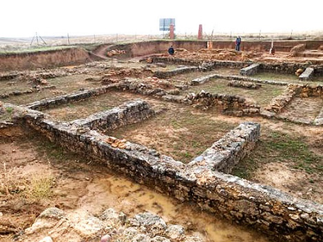

|
LEÓN ROMANO
- Villafranca del Bierzo se hallan Carcesa. El cercano Castro de la Ventosa, nos da fe del emplazamiento de la primitiva ciudad celta de Bergidum, luego trasladada a Cacabelos con el nombre de Bergidum Flavium. - En Villaquilambre se localiza la villa romana de Navatejera del siglo I al V. Cerca de la villa se hallan los restos de un campamento romano.
-
En Cacabelos se localiza Bergidum Flavium, ciudad que algunos sitúan,
a la altura del actual cementerio. El vestigio más monumental del yacimiento de Castro
Ventosa es la magnífica muralla de época bajo imperial. La
existencia del yacimiento romano de La Edrada al Norte de Cacabelos, sume
en la duda a los investigadores que tradicionalmente asocian este último
yacimiento a los restos de la ciudad de Bergidum Flavium y a la mansio
viaria.
 - En el término municipal de Soto de la Vega, en julio de 2017, se ha descubierto un tramo de 600 metros de calzada romana que enlazaba Astorga con Zaragoza y con Mérida. Su anchura es de 7,5 m., construido mediante una capa de guijarros, tierra y arena apisonada y está protegida mediante muros laterales de 1,20 m. de altura. También se han descubierto cinco alcantarillas con bóveda de medio cañón y un puente de cuatro vanos sobre el río Peces. En abril de 2018 los metros de calzada descubierta son 1.150m. En Palacios de la Valduerna (400m), Soto de la Vega (600m, en Santa Colomba) y La Bañeza (150m, en San Mamés). - En Valdelugueros, en abril de 2020, se pone en valor unos 3km la calzada romana de Vegarada. La calzada conectaba Lucus Asturum (Asturias) con el asentamiento de la Legio VI Victrix primero y la Legio VII Gemina después (actual León) y la zona de Asturica Augusta (Astorga).
- La necrópolis tardorromana encontrada en
las ruinas de la Basílica de Marialba de la Ribera. Se ha hallado
una ciudad romana bajo templo de Marialba que recuerda a Carranque. - En Montealegre, agosto 2020, La galería romana del Górgora ligada a la minería del oro será visitable en otoño. Villagatón presenta la señalización y puesta en valor de la Galería Romana del Barranco del Górgora-Peña Infierna. - El castro de Chano, poblado fortificado que destaca por su estado de conservación, se han localizado cerca de veinte construcciones. En la zona norte del interior del castro se documentaron dieciséis edificaciones de planta circular. Tres fosos excavados en la ladera oeste delimitan el castro. Las viviendas podían alcanzar hasta 5,5 metros de diámetro y sus muros 60cm de grosor. La única abertura era la puerta de entrada y ésta aparece elevada sobre el suelo. - En Galleguillos de Campos, febrero de 2018, unas obras de regadío del canal de Payuelos han destapado cinco siglos de ocupación romana. Las excavaciones han sacado a la luz una necrópolis, un poblado y una calzada romana desconocida. Los vecinos llevan años encontrando restos de monedas y vasijas. - En San Andrés de Rabanedo, investigadores de la UCM y del CSIC documentan un gran complejo militar romano. Situado en Trobajo del Camino, en las proximidades de la ciudad de León, se trata de los restos de al menos 18 recintos campamentales, que forman el mayor conjunto conocido hasta la fecha en toda la Hispania antigua. los restos hallados corresponden a un complejo relacionado con el entrenamiento de las tropas.
|